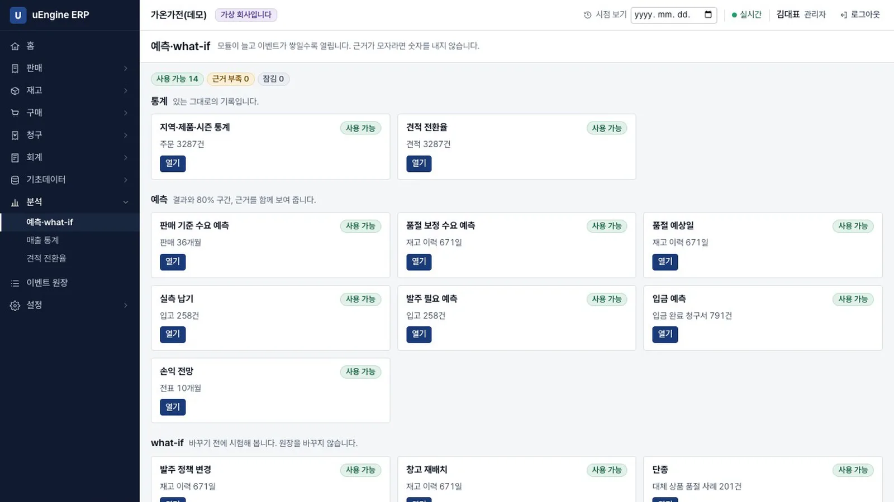
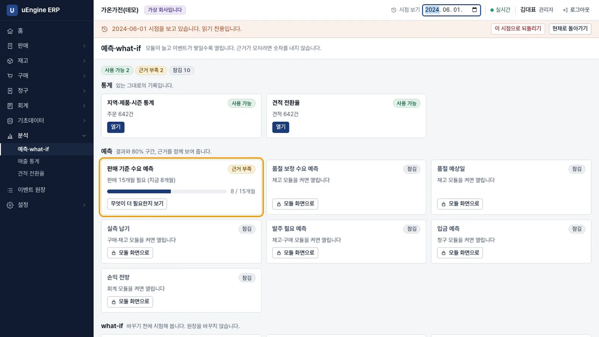
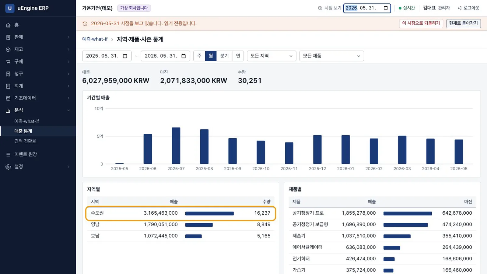
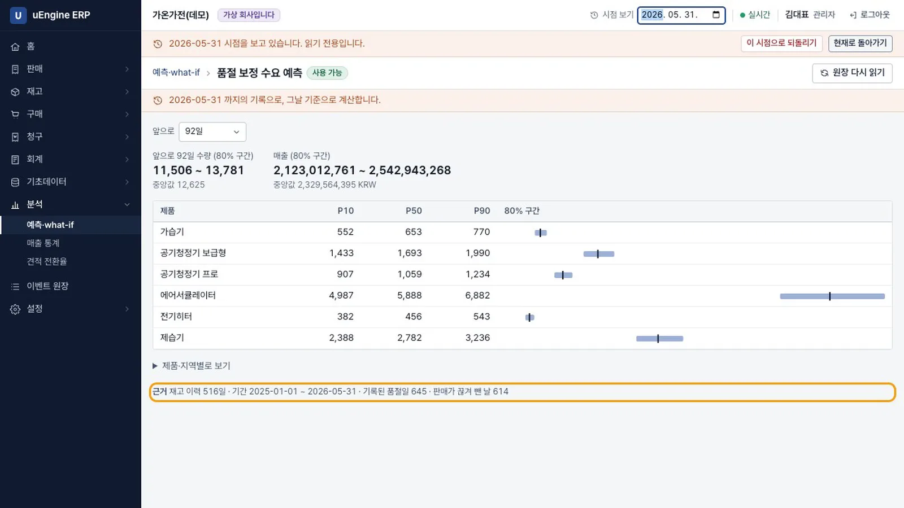
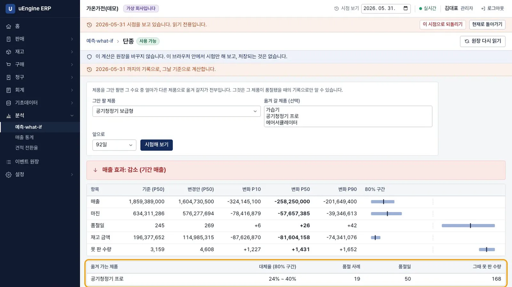
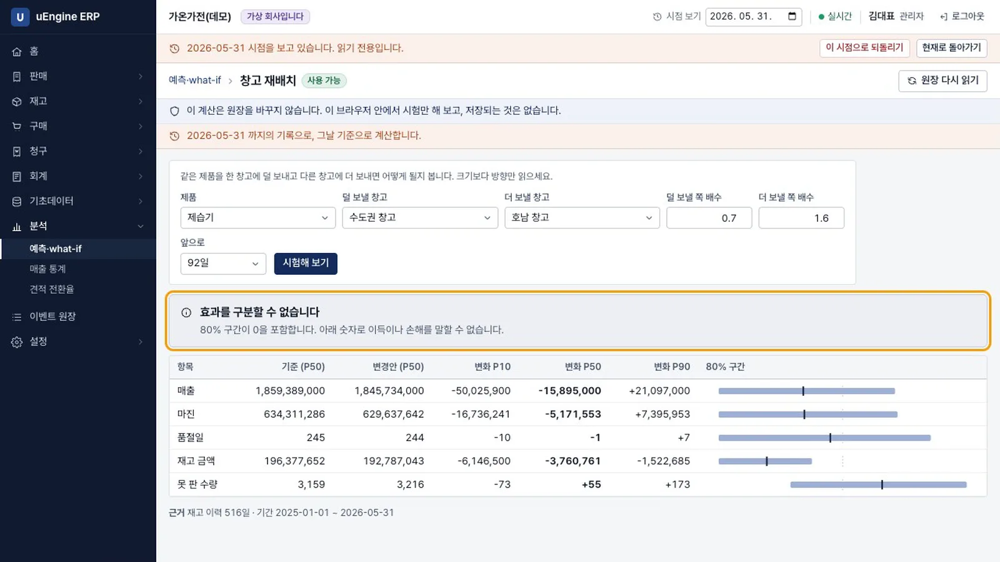
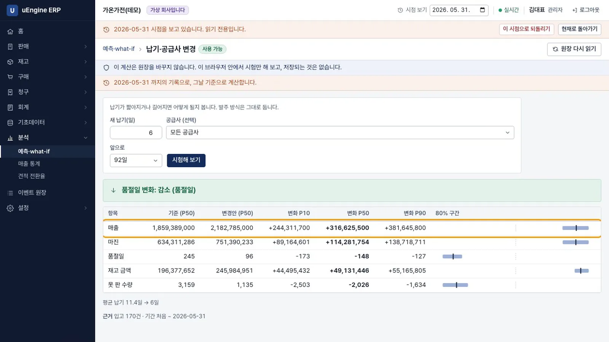
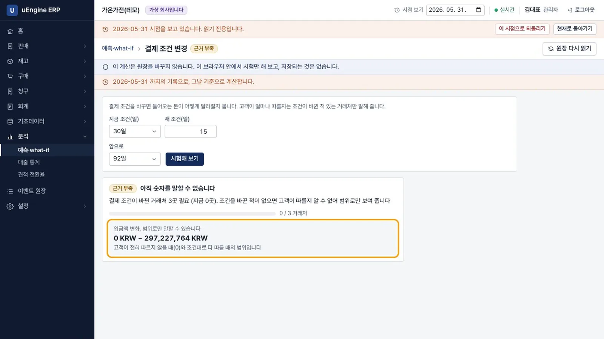
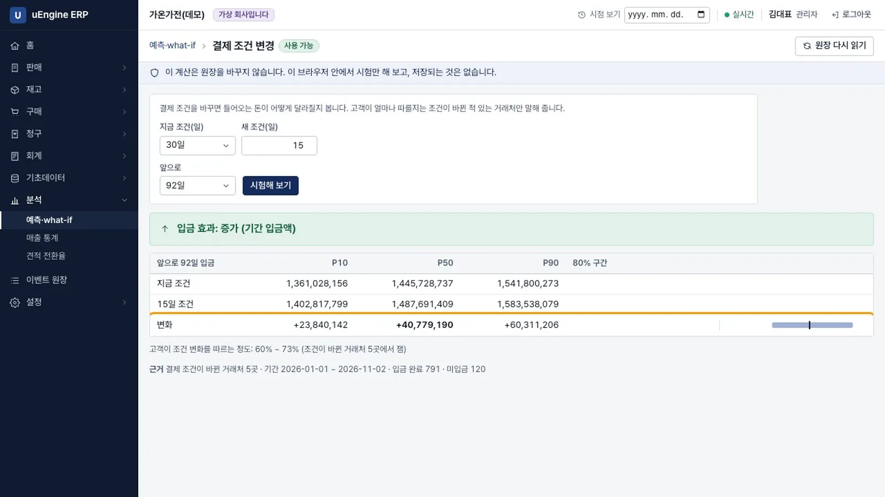

모델은 잠김, 근거 부족, 사용 가능의 세 상태로 보입니다. 수요 예측을 구간으로 보고, 증산·단종·재배치·납기·결제 조건을 바꾸기 전에 시험합니다. 원장은 바꾸지 않습니다.
무엇을 · 왜#
예측과 what-if는 모듈의 표가 아니라 원장의 이벤트를 읽습니다. 숫자만 내놓고 틀리는 일을 막기 위해 모든 모델은 세 상태 중 하나로 보입니다.
| 상태 | 뜻 | 화면 |
|---|---|---|
| 잠김 | 필요한 모듈이 꺼져 있음 | 어떤 모듈을 켜면 되는지 안내 |
| 근거 부족 | 모듈은 있으나 이벤트가 부족함 | 무엇이 얼마나 더 필요한지 표시, 범위만 제시 |
| 사용 가능 | 계산 가능 | 결과 + 80% 구간 + 근거(기간, 사례 수) |
결과 구간이 0을 포함하면 what-if는 효과를 구분할 수 없다고 말합니다.
이 장의 숫자는 실제 회사의 성능이 아닙니다
모든 숫자는 생성기로 만든 가상 회사의 결과입니다. 생성기와 추정기는 같은 가정(완만한 계절 변화, 일정한 발주 방식, 품절로 판매하지 못한 수요)을 공유하므로 실제 회사에서는 이보다 나쁠 것으로 보아야 합니다. 임계값도 가상 회사에서 측정해 정했고, 실제 회사에서는 다시 측정해야 합니다.
재고의 가치는 예측 정확도보다 what-if에 있습니다. 이 가상 회사 시험에서는 판매가 끊긴 구간만 빼도 재고 이력을 쓴 것과 수요 예측 오차가 같았습니다. 품절이 뚜렷한 공백으로 나타나는 생성기의 특성 때문일 수 있고, 일부만 품절되는 실제 회사에서는 재고 기록이 더 나을 수 있습니다. 재고 기록이 있어야 열리는 것은 발주 정책 변경과 창고 재배치입니다.
계산은 이 브라우저에서 합니다. 저장되는 것은 없습니다. 무료 플랜에서의 속도는 측정하지 않았습니다.
따라 하기#
앞 장과 같은 가상 회사에 관리자로 로그인합니다.
숫자가 조금 다를 수 있습니다
가상 회사를 새로 만들면 what-if의 숫자가 조금 달라집니다. 주문 건수는 같고, 같은 회사에서 다시 실행하면 같은 숫자가 나옵니다. 원인은 아직 확인하지 못했습니다. 아래 숫자는 이 장과 제품 소개 영상을 찍은 회사의 것입니다.
- 세 상태 보기. 분석 → 예측·what-if를 엽니다. 오늘 기준으로 14개 모델이 모두 사용 가능입니다.

모델 목록 - 재고를 켜기 전으로 가기. 시점 보기에
2024-06-01을 넣습니다. 재고 모듈을 켜기 전이라 품절 보정 수요 예측은 잠김(재고 모듈을 켜면 열립니다), 판매 기준 수요 예측은 근거 부족(판매 15개월 필요 (지금 8개월))입니다. 현재로 돌아가기를 눌러 현재 시점으로 돌아옵니다.
2024-06 시점 - 통계 보기. 시점 보기에
2026-05-31을 넣고 매출 통계를 엽니다. 지난 1년 매출이 지역별, 제품별로 나옵니다. 수도권이 3,165,463,000으로 가장 큽니다.
통계 - 수요 예측 보기. 품절 보정 수요 예측을 엽니다. 앞으로 92일 동안의 수요량은 11,506 ~ 13,781(중앙값 12,625)입니다. 아래 근거에 재고 이력 516일, 기록된 품절일 645가 적혀 있습니다.

수요 예측 - 여름 상품 발주 2배. 발주 정책 변경에서
에어서큘레이터를 고르고 제품 더하기로제습기를 더합니다. 발주량 배수와 발주점 배수는 2입니다. 시험해 보기를 누릅니다. 매출 변화는 P50 +286,361,000, 80% 구간 +224,017,900 ~ +357,395,100이고, 품절일은 245에서 123으로 줄고, 재고 금액은 +68,221,707입니다.
발주 2배 - 단종. 단종에서
공기청정기 보급형을 고릅니다. 매출 변화는 P50 -258,250,000입니다. 아래 표가 근거입니다. 공기청정기 프로로 옮겨 가는 대체율이 24% ~ 40%이고, 품절 사례 19건에서 추정했습니다.
단종 - 창고 재배치. 창고 재배치에서 제품
제습기, 덜 보낼 창고수도권 창고, 더 보낼 창고호남 창고를 고릅니다.효과를 구분할 수 없습니다가 숫자보다 먼저 나옵니다. 매출 변화의 80% 구간이 -50,025,900 ~ +21,097,000으로 0을 포함하기 때문입니다.
재배치 - 납기 줄이기. 납기·공급사 변경의 새 납기에
6을 넣습니다. 평균 납기 11.4일의 절반쯤입니다. 품절일은 245에서 96으로 줄고, 매출 변화는 P50 +316,625,500, 구간 +244,311,700 ~ +381,645,800입니다. 그 납기를 공급사와 합의할 수 있는지는 이 표로 알 수 없습니다.
납기 - 결제 조건. 결제 조건 변경에서 지금 조건
30일, 새 조건15로 시험합니다. 이 시점에는 조건이 바뀐 거래처가 없어 근거 부족입니다.0 KRW ~ 297,227,764 KRW범위로만 표시합니다.
결제 조건 2026-05-31 - 현재에서 다시. 현재로 돌아가기를 누르고 같은 시험을 합니다. 조건이 바뀐 거래처 5곳의 기록이 있어 계산합니다. 앞으로 92일 동안의 입금 변화는 P50 +40,779,190, 구간 +23,840,142 ~ +60,311,206입니다.

결제 조건 현재
녹화에서는 시험 전후로 원장의 이벤트 수가 42,220건으로 같았습니다.
확인 문제#
재배치 결과에 숫자가 있는데도 "구분할 수 없음"이라고 하는 이유는 무엇인가요?
가운데 값은 있지만 80% 구간이 0을 포함합니다. 늘어날지 줄어들지 말할 수 없다는 뜻이므로, 숫자로 이득이나 손해를 판단하지 않습니다.
결제 조건 시험이 같은 회사인데 시점에 따라 다른 이유는 무엇인가요?
시점을 고르면 그 시점까지 시스템에 기록된 정보로 계산합니다. 고객이 새 조건을 얼마나 따르는지는 조건이 바뀐 거래처의 기록으로만 알 수 있고, 2026-05-31까지는 그런 거래처가 없었습니다.
재고 모듈을 켜면 수요 예측이 정확해지나요?
이 가상 회사 시험에서는 거의 그렇지 않았습니다. 재고를 켜서 얻는 것은 발주, 재배치 같은 what-if와 품절 예상일입니다. 실제 회사에서는 다시 측정해야 합니다.